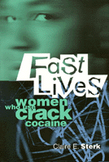

<body bgcolor="#FFFFFF" text="#000000" link="#0000FF" vlink="#CC0000" alink="#CC0000"><center><hr width="350" size="1" align="center" noshade>An in-depth look at the lives, struggles, and dilemmas of women who use crack cocaine<hr width="350" size="1" align="center" noshade><p><a href="https://cdcshoppingcart.uchicago.edu/Cart/ChicagoBook.aspx?ISBN=9781566396714&&PRESS=temple" target="_top">Buy this book!</a> | <a href="https://cdcshoppingcart.uchicago.edu/Cart/Cart.aspx?PRESS=temple" target="_top">View Cart</a> | <a href="https://cdcshoppingcart.uchicago.edu/Cart/Cart.aspx?PRESS=temple" target="_top">Check Out</a></p><p></p></center><!--none//--><h1>Fast Lives</h1>
<H2>Women Who Use Crack Cocaine</H2>
<h3>Claire E. Sterk</h3>
<P>cloth 1-56639-671-9 $54.50, Feb 99, <FONT COLOR=#990033>Out of Stock Unavailable</FONT>
<br>paper 1-56639-672-7 $30.95, Feb 99, <FONT COLOR=#990033>Available</FONT>
<br>Electronic Book 1-59213-807-1 $30.95 <FONT COLOR=#990033>Out of Stock Unavailable</FONT>
<BR> 256 pp
5.5x8.25
</P><BLOCKQUOTE><I>"...</I>Fast Lives<I> offers many new insights into neglected topics.... [It] is an impressive piece of ethnographic research. Accessible and engaging, it gives the reader access to a world that most of us would never otherwise see."</I>
<br>&#151<b><I>Criminal Justice Review</I></b><I></I></BLOCKQUOTE>
<P>Providing insight into drug use from the point of view of female users, this book tells of the complex lives, challenges, and choices of women who use crack cocaine. While popular images of these women present them simply as unreliable individuals, unfit mothers, and women who will do almost anything for crack, Claire Sterk's years of ethnographic research reveal the nature and meaning of crack cocaine use in the larger context of their lives, including the impact of such issues as gender, class, and race. </P>
<P>Focusing on active crack users, <I>Fast Lives</I> compiles information from participant observation, informal conversations, individual interviews, and group discussions. Sterk details the ways in which use affects the lives of these crack users. She captures how these women arrived at their use, how they survive under current circumstances such as the constant threat of HIV/AIDS and violence, how they develop and maintain intimate relationships, how they combine the multiple social roles of mother and drug user, and how&#151as they share their aspirations and expectations for the future&#151their stories underscore the effects of poverty, sexism, and racism on their lives. </P>
<P>Many of these women recognize their own responsibility for ensuring positive change. Sterk's book, which includes an argument for a "harm reduction" approach, reminds us that their strength and courage will too often be futile without social policies that are realistic and appropriate for women. </P>
<I><P>Fast Lives</I> will engage readers interested in social problems as well as students of cultural anthropology, sociology, criminology, public health, ethnography, substance abuse, and women's health. </P>
<BR>&nbsp;<h2>Excerpt</h2><P>Excerpt available at <a href="http://www.temple.edu/tempress">www.temple.edu/tempress</a></p>
<BR>&nbsp;<h2>Reviews</h2>
<p><I>"Sterk's method is classical social science."</I>
<br>&#151<b><I>Addiction</I></b>
<p>Read a <a href="../authors/1433_review.pdf">review</a> from <I>J. biosoc. Sci.</I>, Volume 34 (2002), written by Anous Dancroft (pdf).
<p>Read a <a href="../authors/1433_review2.pdf">review</a> from <I>Contemporary Sociology</I>, Volume 29.2 (March 2000), written by Paloma Sales and Sheigla B. Murphy (pdf).
<p>Read a <a href="../authors/1433_review3.pdf">review</a> from <I>The American Journal of Sociology</I>, Volume 105.4 (January 2000), written by Kathryn J. Fox (pdf).
<BR>&nbsp;<h2>Contents</h2><P>
<P>Acknowledgments
<br>1. Introduction
<br>2. Getting Into Drugs
<br>3. Patterns of Income Generations and Drug Use
<br>4. Significant Others: The Women's Steady Partners
<br>5. Reproduction and Motherhood
<br>6. Off and On: Experiences with Drug Treatment
<br>7. Female Drug Users and the AIDS Epidemic
<br>8. Violent Encounters
<br>9. Past Experiences, Future Aspirations, and Policies
<br>Notes
<br>Bibliography
<br>Index
</P><BR>&nbsp;<H2>About the Author(s)</H2>
<P><B>Claire E. Sterk</B> is Associate Professor of Public Health at Emory University.</P>
<BR><H2>Subject Categories</H2>
<p><A HREF="/tempress/women.html" TARGET="_top">Women's Studies</a>
<BR><A HREF="/tempress/urban.html" TARGET="_top">Urban Studies</a>
<BR><A HREF="/tempress/health.html" TARGET="_top">Health and Health Policy</a>
</p>
<p align="center"><a href="https://cdcshoppingcart.uchicago.edu/Cart/ChicagoBook.aspx?ISBN=9781566396714&&PRESS=temple" target="_top">Buy this book!</a> | <a href="https://cdcshoppingcart.uchicago.edu/Cart/Cart.aspx?PRESS=temple" target="_top">View Cart</a> | <a href="https://cdcshoppingcart.uchicago.edu/Cart/Cart.aspx?PRESS=temple" target="_top">Check Out</a></p><p><font face="Arial" size="1"><a href="copyright.html" onMouseOver="window.status='Web Copyright Policy';return true;" onMouseOut="window.status=''" title="Web Copyright Policy">&copy;</a> 2015 <a href="http://www.temple.edu" target="new" onMouseOver="window.status='Link to Temple University home page';return true;" onMouseOut="window.status=''" title="Link to Temple University home page">Temple University</a>. All Rights Reserved. http://www.temple.edu/tempress/titles/1433_reg.html</font></p>